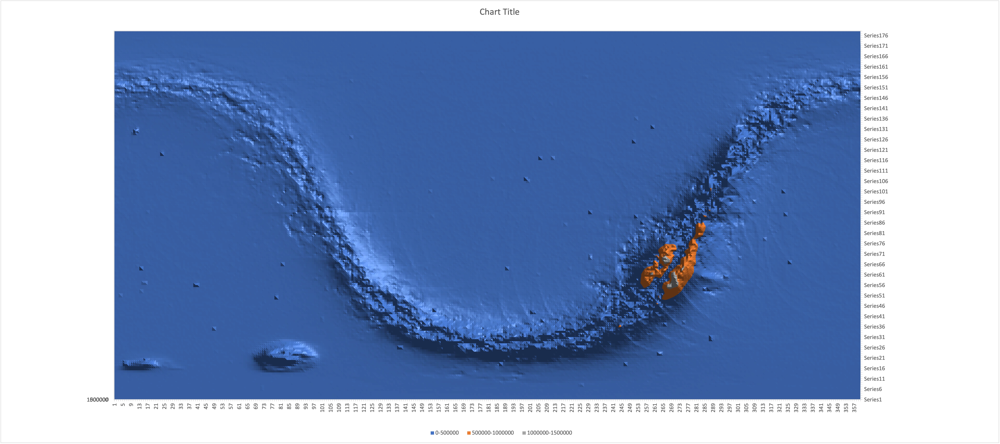
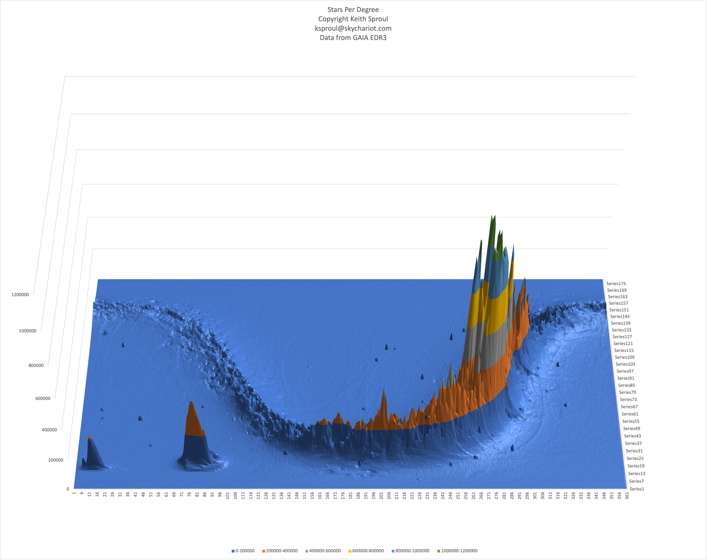

Gaia Star Catalog SQL Database Project
by Mark & Keith Sproul
Using the GAIA Telescope Data
European Space Agency
Global Astrometric Interferometer for Astrophysics
| GAIA Docmentation | https://gea.esac.esa.int/archive/documentation/GDR3/ |
| GAIA SQL Project Mirror Site | http://www.skychariot.com/gaia.html |
| GAIA SQL Project Github Site | https://github.com/msproul/GaiaSQL |
Keith Sproul ksproul@skychariot.com
See the article in the September 2022 issue of Reflections Magazine Page 18
Abstract
The GAIA Star Catalog (Data Release 3) has 1.8 BILLION Stars.
That is too many to handle easily.
We put that data into an SQL Database that is accessible by other programs.
The European Space Agency developed the Gaia space observatory to create
the largest, most precise three-dimensional map of the Milky Way by surveying about 1 percent of the galaxy's 100 billion stars.
It was launched in December 2013 and became operational in July 2014.
Gaia collected data on almost 2 billion stars: position, brightness, proper motion, and more.
The first release of data, information on about 1.1 billion stars, was in September 2016.
The second release of data, 1.6 billion stars, was April 2018. We started this project with Early Release of D2 (ERD3) with 1.8 billion stars.
The current release (DR3) was released June of 2022, and it contains information on 1.8 billion stars and even more fields than ERD3.
Many of us use planetarium programs to learn the night sky or control a telescope for imaging or observing. Many such programs are available, some commercial, some free and open-source, on all platforms, Macintosh, Linux, Windows and cell phones.
These planetarium programs usually have star catalogs in them, quite often the Yale Bright Star (9,000 stars), Hipparcos (118,000 stars), and Henry Draper (272,000 stars).
The Gaia data is HUGE, with 152 fields per star and 1.8 billion stars, that is a LOT of data. (2.1 Terabytes) All we want is enough information to be able to display the star, with location, color, and brightness and to do it QUICK. Even though computers are getting bigger and bigger, it is unrealistic to keep the entire Gaia catalog in memory. We wrote a simple 'C' program to extract out the 7 fields that we wanted out of the 152 fields, create integer values for the RA and DEC for fast searching and put in an easy to access database.
Then people writing planetarium programs can easily add SQL database calls and retrieve the stars from the database server.
This has been fully implemented in SkyTravel planetarium software. (See Appendix 4).
We have done the same thing with the Two Micron All-Sky Survey (2Mass) star catalog (470 million stars). Gaia has announced DR4 and DR5. We will implment them when they are released.
Index
| Installation Steps | |||
|---|---|---|---|
| Top | Jump to Top | ||
| Preface | How to connect to our server | ||
| Step 0 | System Requirements | Hardware and Software | |
| Step 1 | Install Linux Operating System | Ubuntu Linux V 20 | ubuntu.com |
| Step 2 | Create Linux Accounts | ||
| Step 3 | Install Database Server | MariaDB mySQL |
mariadb.org mysql.org |
| Step 4 | Create SQL Accounts | ||
| Step 5 | Create GAIA SQL Database | ||
| Step 6 | Upload GAIA SQL Data Files into the database | This will take a LONG time | |
| Step 7 | Manually test primary SQL function calls | ||
| Step 8 | Configure SkyTravel to access the Gaia Server | ||
| Appendix 1 | How to access from other software | ||
| Appendix 2 | Sample SQL outputs | ||
| Appendix 3 | SQL Helper Programs | ||
| Appendix 4 | Alpaca & SkyTravel Planetarium | ||
| Appendix 5 | File Sizes & Process Times | Just FYI | |
| Appendix 6 | Our Current Databases | ||
| Appendix 7 | Web Links of Interest | ||
| Appendix 8 | Pictures of interest | ||
| Credits | GAIA Crdits | ||
| Text in Yellow are commands you type. | |||
| Text in Cyan is contents of files or file names. | |||
This document will explain how to set up an Ubuntu Linux server running MariaDB (or mySQL) SQL Server and then implement the Gaia Star Catalog search engine.
The Gaia DR3 (Data Release 3) catalog has 1.8 BILLION stars. There are 3386 individual ZIP files with over 500,000 records per file and 152 fields per record. Of all of that data, we are only interested in 7 fields, and then we add two index fields to speed up searching.
You can also do this using SQL servers on other platforms, skip to step 3 and install your SQL server on your platform of choice.
This document will explain how to install an SQL database server that will make the Gaia Star Catalog available to programs wanting to display the stars.
We have done the hard work for you and have created much smaller files with only the needed data and the indexes already created. You only have to download 75 gig of compressed files instead of over 700 gig of compressed files of the original data. This then decompresses into 228 gig of SQL data files. These then get loaded into the SQL server. Once loaded both the compressed (*.gz) and uncompressed (*.csv) files can be deleted.
The first computer we ran the SQL server on was a 2014 Dell desktop with an i7-4770 CPU @ 3.40GHz. We installed 32 gig of memory and a SATA attached SSD hard drive. Later we used an NVME SSD hard drive. The NVME Solid State drive plugs into the CPU motherboard and gives you even faster speed than a SATA attached SSD drive.
We later upgraded to an old (2012) Dell Server class machine with dual Xeon CPU E5-2687W 0 @ 3.10GHz and 256 gig of memory. A computer of this class can be bought off of eBay for under $1000. This is also our local file server.
Our final configuration has the operating system on a SATA attached SSD and the actual SQL database files on the NVME SSD by itself with no other files on that drive. I feel this configuration of having the SQL files on a separate NVME SSD drive is ideal. This is especially worthwhile if the computer is used for other things because of how SSD drives age. We use the same server as our local file server and have several other SQL databases on it for other uses.
Preface: How to connect to our server
We have our GAIA SQL Star Server available on the intnet and will allow people to connect to it. The information you need to connect to server is:- Host Name or IP address of the server
- Port Number, (SQL Default 3306) Move it some other number for security
- SQL Account Name
- SQL Account Password
- Database Name: "gaia" (Case Sensitive)
If using SkyTravel, see the section on that below in Appendix 4 and contact me so I can get you set up.
If you are writing your own software, get the SQL drivers working and contact me and I will give you the info on how to connect to our server.
I would love to have people use our server. I would also love to help people install it on your computer too. So, if you are interested, please send me email.
Jump to Index
Step 0: System Requirements
| Recommend Hardware | |
|---|---|
| Processor | Intel I-7 or better |
| Cores | Eight Cores or more |
| Memory | 32 gig or more, it will run on less |
| Storage | 2 TB SSD NVME SSD even better |
| Temp Storage | 1 TB HD or bigger Not needed after installation done Not absolutely required |
| Recommend Software | |
| Operating System | Ubuntu Linux V 20 or later |
| SQL Database Server | MariaDB or mySQL |
| Download Files | |
| SQL Database definitions and scripts | GaiaStarProject.sql |
| SQL Database GAIA Data | Gaia-0.gz - Gaia-7.gz |
Jump to Index
Step 1: Install Linux Operating System
Download Ubuntu Linux from here: ubuntu.com
If you already have a Linux computer running, you can skip to Step 2.Download the Ubuntu install image onto a USB thumb drive and boot off it. Then install Linux. If you are going to use the computer as a desktop, you can install the version with the GUI interface. Otherwise, you can just use the server version and not have a GUI interface on the computer at all. This process wipes out the hard drive and gives you a completely clean computer.
Jump to Index
Step 2: Create Linux Accounts
When you install Ubuntu Linux, it creates a ROOT account and what-ever account you give it when you go thru the install procedure. This account will have 'SUDO' privileges. (Super User).I would recommend creating another account called GAIA or astronomy or something not assigned to an individual. This account will also need to have SUDO privileges. This is NOT required, you can use the default account.
Jump to Index
Step 3: Install SQL Database Server
If you created the second Linux account, described above, log into it and do all of your work from that account. If not, just use the default account you created when you installed Linux.Then install either MariaDB or mySQL database servers. SQL uses TCP/IP port 3306 by default. If you are putting your server out on the internet, it would be a good idea to move this to a non-standard port to reduce the amount of hack attempts make it to your server.
If putting the server on the internet, you should also lock down the server using the Linux "iptables" firewall feature. This is an advanced topic and will be expanded on later. There are lots of good explanations in iptables on the internet.
This software has been tested on both MariaDB and mySQL. It has not been tested on other SQL platforms but may work with minor modifications.
******** DO NOT INSTALL BOTH! ********
If you are going to do a lot with the command line SQL environment, I recombined installing this to give you nice colored output.https://github.com/nitso/colour-mysql-console
Jump to Index
Step 3-A: Install SQL Database Server (MariaDB)
Donwload MariaDB from here: mariadb.org
Go to the MariaDB web page and go thru the install process described there.To change the port mariaDB listens on, edit the config file:
/etc/mysql/mariadb.cnfand change the port = 3306 to some other number.
In the file:
/etc/mysql/mariadb.conf.d/50-server.cnfChange bind-address = 127.0.0.1 to bind-address = 0.0.0.0
This makes it so you can talk to the server from other computers.
Jump to Index
Step 3-B: Install SQL Database Server (mySQL)
Donwload mySQL from here: mysql.org
Go to the mySQL web page and go thru the install process described there.To change the port mySQL listens on, edit the config file:
/etc/mysql/mysql.conf.d/mysqld.cnfand change the port = 3306 to some other number.
Also change bind-address = 127.0.0.1 to bind-address = 0.0.0.0
This makes it so you can talk to the server from other computers.
Jump to Index
Step 4: Create SQL Accounts
SQL has a concept of accounts which are different from the Linux user accounts. SQL accounts have their own passwords and different accounts can have access to different databases and also different levels of access within the database.The main SQL account you use will have to have full privileges, but the accounts that actually access the GAIA data will be significantly restricted.
The software that accesses the GAIA database will use one of these restricted accounts. If you have multiple people using the server, give each one their own account. That way you can look back later and see who is using it when and how often. Each one of these accounts will be significantly restricted so they can ONLY execute the predefined SQL queries.
To run the SQL server type the following: (it is the same command when using MariaDB or mySQL)
mysql -u username -p
You might have to do this in Super User Mode.
sudo mysql -u username -p
CREATE USER 'username'@'%' IDENTIFIED BY 'NEW_USER_PASSWORD';
GRANT EXECUTE ON `gaia`.* TO 'username'@'%';
FLUSH PRIVILEGES;
DROP USER 'username'@'%';
FLUSH PRIVILEGES;
These are the accounts and passwords you put into the SkyTravel Config file so that can log into the SQL server.
Jump to Index
Step 5: Create GAIA SQL Database
Download the files from here:
Gaia SQL Files
The first file you want to use is: GaiaStarProject.sql
The database consists of 3 tables and a small handful of SQL procedures.
Table Descriptions | ||
|---|---|---|
| Table Name | # of Records | Description |
| Gaia | 1.8 Billion 1,811,709,771 | Contains the actual star data, ra,dec,magnitude,color |
| grid | 64,800 (360 * 180) | A history of what has been looked up, the number times each grid has been accessed, the last user and the lat time it was accessed |
| eventLog | Grows | A Log of every time someone connects and a log of every query made to the server |
SQL Table Definitions
MariaDB [gaia]> describe Gaia;
+-----------------+------------+------+-----+---------+-------+
| Field | Type | Null | Key | Default | Extra |
+-----------------+------------+------+-----+---------+-------+
| designation | char(32) | NO | | NULL | |
| source_id | bigint(20) | NO | PRI | NULL | |
| ra | double | NO | | NULL | |
| decl | double | NO | | NULL | |
| parallax | double | YES | | NULL | |
| phot_g_mean_mag | double | YES | | NULL | |
| bp_rp | double | YES | | NULL | |
| raI | int(11) | NO | MUL | NULL | |
| decI | int(11) | NO | MUL | NULL | |
+-----------------+------------+------+-----+---------+-------+
9 rows in set (0.001 sec)
MariaDB [gaia]> describe grid;
+--------------+------------+------+-----+---------+-------+
| Field | Type | Null | Key | Default | Extra |
+--------------+------------+------+-----+---------+-------+
| idx | int(11) | NO | PRI | NULL | |
| ra | int(11) | YES | MUL | NULL | |
| de | int(11) | YES | MUL | NULL | |
| starCount | int(11) | YES | | NULL | |
| cmt | char(32) | YES | | NULL | |
| LastDateTime | datetime | YES | | NULL | |
| LastUser | char(32) | YES | | NULL | |
| aCount | int(11) | YES | | NULL | |
| minTime | bigint(20) | YES | | NULL | |
| maxTime | bigint(20) | YES | | NULL | |
| avgTime | bigint(20) | YES | | NULL | |
+--------------+------------+------+-----+---------+-------+
11 rows in set (0.001 sec)
MariaDB [gaia]> describe eventLog;
+-----------+------------+------+-----+---------+----------------+
| Field | Type | Null | Key | Default | Extra |
+-----------+------------+------+-----+---------+----------------+
| idx | bigint(20) | NO | PRI | NULL | auto_increment |
| DateTime | datetime | YES | | NULL | |
| GUser | char(64) | YES | | NULL | |
| GCUser | char(64) | YES | | NULL | |
| FuncName | char(32) | YES | | NULL | |
| ra | int(11) | YES | | NULL | |
| de | int(11) | YES | | NULL | |
| mag | int(11) | YES | | NULL | |
| deltatime | bigint(20) | YES | | NULL | |
| numstars | int(11) | YES | | NULL | |
| comment | char(64) | YES | | NULL | |
+-----------+------------+------+-----+---------+----------------+
11 rows in set (0.001 sec)
To create all of this, load in the file GaiaStarProject.sql using the followig command:
source /your-path-here/GaiaStarProject.sql
+-----------------------+------------------------+------------+
| Gaia System Installed | (C) 2022 Keith Sproul | Build Date |
+-----------------------+------------------------+------------+
| 2022-08-28 | ksproul@skychariot.com | 2022-08-25 |
+-----------------------+------------------------+------------+
1 row in set (0.00 sec)
+-----------------------------------------------------------------------+
| You now need to upload the data which can take a LONG time (~8 hours) |
+-----------------------------------------------------------------------+
| type the command "source /your-path-here/Gaia-Upload-Master.sql" |
+-----------------------------------------------------------------------+
1 row in set (0.00 sec)
Query OK, 0 rows affected (0.01 sec)
+-----+---------------------+-------------------+---------------+------+------+-----------+----------+-----------------------+
| idx | DateTime | GCUser | FuncName | ra | de | deltatime | numstars | comment |
+-----+---------------------+-------------------+---------------+------+------+-----------+----------+-----------------------+
| 1 | 2022-08-28 00:57:17 | ksproul@localhost | SetLogComment | NULL | NULL | NULL | NULL | GAIA System Installed |
+-----+---------------------+-------------------+---------------+------+------+-----------+----------+-----------------------+
1 row in set (0.00 sec)
SQL Scripts
There are a few SQL scripts needed. Thew were creatred in the above step so they are already in your system.Required SQL Scripts | |||
|---|---|---|---|
| Function Name | Arguments passed | Returns | Comments |
| GetRaDec | ra,dec | List of stars | designation,ra,decl,phot_g_mean_mag,bp_rp |
| GetDeclination | dec | List of stars | designation,ra,decl,phot_g_mean_mag,bp_rp Used ONLY for the poles, above 84° and below -84° |
| GetStarFromID | source_id | One Star | designation,ra,decl,phot_g_mean_mag,bp_rp |
| SetLogComment | Coment | nothing | Inserts comment into event log |
| GetVersion | nothing | Gaia Version | Currently "Gaia DR3" |
| GetMilliSeconds | nothing | Time in milliseconds | Called from GetRaDec, GetDeclination, GetStarFromID |
Optional SQL Scripts | |||
| Function Name | Arguments passed | Returns | Comments |
| showfunctions | nothing | List of functions | Shows the functions in this database |
| showlastDay | nothing | List of events | Shows the events on the last day used |
| showlastMonth | nothing | List of events | Shows the events this month |
| showGridUse | nothing | Grid Stats | Shows ow many grids have been visited |
| showGridComments | nothing | All Grids with comments | Shows All the grids that have labels |
| showUsers | nothing | List of users | Shows who has accessed the system and when |
| UpdateLogFromGrid | nothing | Before / After Counts | Update the comment field in the Event Log from the comment in the Grid |
| GetFirstDate | Username | First Date | Called from showUsers |
| GetLastDate | Username | Last Date | Called from showUsers |
Jump to Index
Step 6: Upload GAIA SQL Data Files into the database
The files you need to download are here:Gaia SQL Files
GaiaStarProject.sql
Gaia-Upload-Master.sql
Gaia-0.gz
Gaia-1.gz
Gaia-2.gz
Gaia-3.gz
Gaia-4.gz
Gaia-5.gz
Gaia-6.gz
Gaia-7.gz
Uploading the Star data can take eight hours or more, depending on the speed of your computer. There is a master file named Gaia-Upload-Master.sql that loads in the 3386 individual SQL source files.
Once you have downloaded the files, decompress them with the following command:
tar -xvf Gaia-*.gz
The master file (Gaia-Upload-Master.sql) looks like this:
select current_date,current_time;
source /path/GaiaSource_000000-003111.sql
source /path/GaiaSource_003112-005263.sql
source /path/GaiaSource_005264-006601.sql
source /path/GaiaSource_006602-007952.sql
source /path/GaiaSource_007953-010234.sql
...
source /path/GaiaSource_785418-786096.sql
source /path/GaiaSource_786097-786431.sql
select current_date,current_time;
Then when in the SQL program type the following:
source /your-path-here/Gaia-Upload-Master.sql
This will start the process to upload the Gaia star data into the SQL server. This can easily take 8 hours. There are ways to speed this up on faster computers by breaking this master file into parts and running them under different threads. But this is for someone that is more familiar with Linux.
Jump to Index
Step 7: Manually test primary SQL function calls
While still running the SQL server, type the following:
call GetRaDec(41,89);
Jump to Index
Step 8: Configure SkyTravel to access the SQL Gaia Server
If you are running SkyTravel, the SQL config file is sqlserver.txt
########################################################################
# this is being set up for expansion to other data bases in the future
# keywords are all lower case
# tabs or spaces
########################################################################
server = ip-address-of-your-sql-server
port = 3306
# 3306 is the default for SQL servers, if you moved it, this has to be changed
username = username
password = password
database = gaia
# Additonal Databases can be added as long as the SQL calls are identical
Appendix 1: How to access from other software
If you want to access the SQL server from other software, you need to figure out how to do remote SQL calls from that software. Most modern programming languages like Python, C++ etc have SQL libraries.The calls are simple.
- Establish a connection to the server, specifying:
- IP address
- Port
- Username
- Password
- Database = 'gaia'
- Some libraries may have you specify the database when establishing the connection. Others may have you do in the call below. The 'C' Library that I use allows you to specify the database either way.
- Send "call GetRaDec(rrr,ddd);" where rrr and ddd are integers of the Right Ascension and Declination of the grid of interest. Both RA and DEC are specified in degrees. "Call GetDeclination(ddd);"" is also specficed in degrees. rrr and ddd are INTEGERS.
- Receive the data, it will come as rows, with each row having the following fields.
- designation
- ra
- decl
- phot_g_mean_mag
- bp_rp
- You may get as few as 40 stars or over 1 million stars.
Appendix 2: Sample SQL outputs
Output of "call GetRaDec(41,89);"
MariaDB [gaia]> call GetRaDec(41,89);
+-----------------------------+--------------------+-------------------+-----------------+-----------+
| designation | ra | decl | phot_g_mean_mag | bp_rp |
+-----------------------------+--------------------+-------------------+-----------------+-----------+
| Gaia DR3 576347884860639488 | 41.86866943291224 | 89.01440466136307 | 16.743874 | 1.6716576 |
| Gaia DR3 576350805438402176 | 41.050304543859006 | 89.00330480665768 | 18.09879 | 2.166626 |
| Gaia DR3 576351007306378496 | 41.030495180442756 | 89.04138060482693 | 17.930351 | 1.7280235 |
| Gaia DR3 576351011596827776 | 41.41313060664077 | 89.03669807855778 | 19.089935 | 1.2064686 |
| Gaia DR3 576351630072113792 | 41.72861411584935 | 89.06869105958295 | 16.463902 | 1.4371014 |
| Gaia DR3 576351831933240064 | 41.84680633077677 | 89.10458926050791 | 18.309978 | 2.42095 |
| Gaia DR3 576352592144781184 | 41.04235837169875 | 89.11845276435936 | 18.26894 | 1.5131359 |
| Gaia DR3 576352626504516864 | 41.78655940318801 | 89.13242107807307 | 18.225294 | 1.6868038 |
| Gaia DR3 576354172691347200 | 41.89208232154285 | 89.15029111048678 | 20.344894 | 1.1297112 |
| Gaia DR3 576354172692740608 | 41.88372510139495 | 89.16046426314382 | 15.288682 | 1.5151243 |
| Gaia DR3 576354413208599552 | 41.55908580060212 | 89.18212089027054 | 20.152815 | 1.6464787 |
| Gaia DR3 576354413211503872 | 41.590925994217635 | 89.17267456210496 | 16.536013 | 1.4355412 |
| Gaia DR3 576354481928070784 | 41.13604364261619 | 89.19400223319153 | 19.237171 | 1.9501858 |
| Gaia DR3 576354580712938240 | 41.3630401987437 | 89.19901756846696 | 19.279167 | 2.1492805 |
| Gaia DR3 576401520410760320 | 41.228310762220126 | 89.20778310793622 | 20.888502 | 1.1336441 |
| Gaia DR3 576401619195451392 | 41.218159284740395 | 89.24023704407439 | 19.112076 | 2.1975384 |
| Gaia DR3 576401932727599744 | 41.84239888503113 | 89.23174603286566 | 20.538027 | 1.4397392 |
| Gaia DR3 576401932729063424 | 41.921975602073886 | 89.23615315832394 | 19.789259 | 2.0240097 |
| Gaia DR3 576402031512312064 | 41.94568789485713 | 89.25754008755138 | 19.62515 | 2.7483368 |
| Gaia DR3 576402035806789632 | 41.78384341917096 | 89.25816387572122 | 20.614538 | 1.5527897 |
| Gaia DR3 576402241965200512 | 41.14549728695915 | 89.27338495568297 | 20.482327 | 1.161766 |
| Gaia DR3 576402413765391616 | 41.626780839880375 | 89.29408570015804 | 16.49394 | 1.0588751 |
| Gaia DR3 576402413765994368 | 41.34361180006078 | 89.28951936876734 | 19.949314 | 1.5039463 |
| Gaia DR3 576402448123032448 | 41.601140610631624 | 89.30122086573685 | 20.270922 | 1.8502216 |
| Gaia DR3 576426740460151680 | 41.00261915390984 | 89.33742096447044 | 16.705479 | 1.2138958 |
| Gaia DR3 576426740460152192 | 41.41443522381758 | 89.332420319697 | 13.721311 | 1.1245737 |
| Gaia DR3 576427079760338304 | 41.424354706037526 | 89.3689749377528 | 18.79454 | 1.7082806 |
| Gaia DR3 576427084055932416 | 41.698479639588825 | 89.37838523881433 | 20.525564 | 1.6010838 |
| Gaia DR3 576430618813935488 | 41.430817452972555 | 89.43217374879978 | 19.919846 | 2.300848 |
| Gaia DR3 576433268810317184 | 41.29414887281169 | 89.51381339229336 | 17.304949 | 1.2009697 |
| Gaia DR3 576433474967100032 | 41.66828131551024 | 89.53473233879221 | 20.8774 | 1.8606377 |
| Gaia DR3 576433715486910720 | 41.74758873601118 | 89.5665489641854 | 17.818441 | 1.139122 |
| Gaia DR3 576434196523242880 | 41.88661742155833 | 89.60136675685666 | 19.99212 | 1.8071518 |
| Gaia DR3 576434196523243008 | 41.75234300755399 | 89.60161702339397 | 19.422754 | 2.5224686 |
| Gaia DR3 576445947553765248 | 41.05525677627699 | 89.6016447833048 | 16.990376 | 1.0930519 |
| Gaia DR3 576446115062184960 | 41.070273259195574 | 89.62545081264635 | 19.408318 | 2.528473 |
| Gaia DR3 576452334167875712 | 41.96981355995181 | 89.69375719480776 | 18.020592 | 1.6589966 |
| Gaia DR3 576453296240558080 | 41.19407555887374 | 89.7264586602675 | 18.699324 | 1.4688148 |
| Gaia DR3 576453884653309952 | 41.68440526137053 | 89.76164294479695 | 16.08289 | 1.2426109 |
| Gaia DR3 576458626295342720 | 41.33099837055657 | 89.84112444691972 | 20.474285 | 2.0975628 |
+-----------------------------+--------------------+-------------------+-----------------+-----------+
40 rows in set (0.220 sec)
Output of "call showLastDay;" and "call showlastMonth;"
MariaDB [gaia]> call showl;
+-------+---------------------+-----------------+---------------+------+------+-----------+----------+-----------------------------------+
| idx | DateTime | GCUser | FuncName | ra | de | deltatime | numstars | comment |
+-------+---------------------+-----------------+---------------+------+------+-----------+----------+-----------------------------------+
| 58906 | 2022-08-12 21:51:10 | msproul@x.x.x.x | SetLogComment | NULL | NULL | NULL | NULL | Mark Sproul (mysqld-8.0/8.0.30) |
| 58907 | 2022-08-12 21:51:10 | msproul@x.x.x.x | SetLogComment | NULL | NULL | NULL | NULL | AlpacaPi - V0.5.1-beta build #147 |
| 58908 | 2022-08-12 21:51:21 | msproul@x.x.x.x | GetRaDec | 283 | 35 | 5379 | 33190 | NULL |
| 58909 | 2022-08-12 21:51:26 | msproul@x.x.x.x | GetRaDec | 284 | 35 | 4999 | 36800 | NULL |
| 58910 | 2022-08-12 21:51:31 | msproul@x.x.x.x | GetRaDec | 285 | 35 | 4962 | 40100 | NULL |
| 58911 | 2022-08-12 21:51:37 | msproul@x.x.x.x | GetRaDec | 282 | 35 | 5471 | 30072 | NULL |
+-------+---------------------+-----------------+---------------+------+------+-----------+----------+-----------------------------------+
Jump to Index
Appendix 3: SQL Helper Programs
All of the documentation here is using the SQL server via the command line interface. There are many very good GUI client applications that make it much easier to do a lot of the maintenance on the SQL server. These programs work with all or most of the SQL servers out there. Below is a list of applications that I know of.I do a lot of work and queries using the command line interface but I use the GUI program for writing my SQL scripts. I use TablePlus on my Macintosh.
I have used DBeaver and mySQL workbench and they work good too.
If using an SQL server from the command line, the colour-mysql-console works very well, showing the tables and columns in different colors.
| Application | Mac | Windows | Linux | Cost | Link | Comments |
|---|---|---|---|---|---|---|
| mySQL Workbench | X | X | X | Free | dev.mysql.com/downloads/workbench/ | |
| phpMyAdmin | X | X | X | Free | www.phpmyadmin.net | |
| SequelPro | X | Free | sequelpro.com | |||
| colour-mysql-console | X | Free | github.com/nitso/colour-mysql-console | * I use this for command line SQL * | ||
| TablePlus | X | X | $79 | tableplus.com | * I use this one on my Mac * | |
| DBeaver | X | X | X | $99 | dbeaver.com | |
| SQLPro Studio | X | $129 | www.sqlprostudio.com/ |
Here are sites with more information on other GUI tools for SQL servers.
Jump to Index
Appendix 4: Alpaca Pi Project & SkyTravel Planetarium
SkyTravel is a planetarium program that is part of the AlpacaPi project. AlpacaPi is a full observatory control system based on the Alpaca Protocol (https://ascom-standards.org/Developer/Alpaca.htm).Alpaca is the next generation of ASCOM and is fully compatible with ASCOM. It uses network based communications instead of the COM architecture used in ASCOM. Alpaca will run on any platform and any number of computers while ASCOM only runs on a single Windows machine. AlpacaPi runs most any flavor of Linux and is targeted at desktop Linux and Raspberry-Pi for the controllers.
The SkyTravel program was originally written for the Commodore-64 computer by Dr. Clif Ashcraft and Dr. Frank Covitz in the 1980's. Mark Sproul has revived this old program and got it running in Linux and has done major upgrades compared to the original which had only around 1000 stars.
Keith Sproul has been doing database programing for over 30 years and has recently started doing SQL databases. He had been writing SQL databases with millions of records, so jumping to a Billion records wasn't hard. Keith then volunteered to put the Gaia data into an SQL database and make it available to the SkyTravel program. Working together with Mark getting this running between our houses was a fun project.
The current configuration has Mark running his full observatory using the SkyTravel program and it connects to the SQL database at Keith's house. Mark is in North East Pennsylvania and Keith is in New Jersey. We also have someone using this from Oregon. SkyTravel is full open source and is available on Github. https://github.com/msproul/AlpacaPi/
Jump to Index
Appendix 5: File Sizes & Process Times
This just FYI info if you are curious.These are the file sizes of the original data vs what we actually need:
File Sizes | ||
|---|---|---|
| File Size | Description | Comment |
| 702 GB | Size of Original Compressed files. (*.gz) http://cdn.gea.esac.esa.int/Gaia/gdr3/gaia_source/ | You do NOT need these files! |
| 2.1 TB | Size of Original Decompressed files. (*.csv) | |
| 73 GB | Size of Final Compressed files you have to download (*.gz) Gaia SQL Files | Download these files! |
| 228 GB | Size of Final Decompressed files (*.sql) | Decompress the above and get these files |
| 260 GB | Size of final SQL files on disk | |
| The *.gz and *.sql files can be deleted when done. However, keeping the *.gz file might be a good idea. | ||
These are the times it took me to download, decompress, process and then upload all of this data:
Processing Times | |
|---|---|
| Time (Hours) | Description |
| 8:15 | Time to download 3386 files over a 1-gig internet feed |
| 7:20 | Time to decompress 3386 files |
| 9:45 | Time to extract the data and create the SQL files needed to populate the database Using custom 'C' program. Not difficult, just a lot of data to process |
| 7:30 | Time to upload the SQL files to the database server Sequentially |
| 4:35 | Time to upload the SQL files to the database server Multi-Threaded |
GAIA Telescope Timeline | ||||
|---|---|---|---|---|
| ----- Year ----- | Data Release | Star Count | Num of Fields | Total Data Size |
| Dec 2013 | Telescope Launched | |||
| Jul 2014 | Telescope became operational | |||
| Sep 2016 | GDR1 Data Release 1 | 1.1 billion stars | 57 fields per star | Total = 0.5 terabytes |
| Apr 2018 | GDR2 Data Release 2 | 1.6 billion stars | 94 fields per star | Total = 1.3 terabytes |
| Dec 2020 | EDR3 Early Data Release 3 | 1.8 billion stars | 99 fields per star | Total = 1.6 terabytes |
| Jun 2022 | GDR3 Data Release 3 | 1.8 billion stars | 152 fields per star | Total = 2.1 terabytes |
| Future | DR4 Data Release 4 Most measurements in DR4 are expected to be 1.7 times more precise than DR2; proper motions will be 4.5 times more precise. | |||
| Future | DR5 Data Release 5 Data will be 1.4 times more precise than DR4, proper motions will be 2.8 times more precise than DR4. | |||
| We will support DR4 and DR5 when they come out. | ||||
Jump to Index
Appendix 6: Our Current Databases
We currently have the following databases online on our MariaDB SQL server:| GDR1 | Gaia Data Release 1 | 1.1 Billion Stars |
| GDR2 | Gaia Data Release 2 | 1.6 Billion Stars |
| GDR3 | Gaia Data Release 3 | 1.8 Billion Stars |
| 2Mass | 2 Micron All Sky Catalog | 470 Million Stars |
+---+--------+-------+--------+---------------+--------------------------------------------------------+------------------------------------------+
| # | DBName | Files | Fields | Stars | Source | Comment |
+---+--------+-------+--------+---------------+--------------------------------------------------------+------------------------------------------+
| 1 | gdr1 | 5231 | 57 | 1,142,679,769 | http://cdn.gea.esac.esa.int/Gaia/gdr1/gaia_source/csv/ | Gaia DR1 Data Release 1 Released 2016-09 |
| 2 | gdr2 | 61234 | 94 | 1,692,919,135 | http://cdn.gea.esac.esa.int/Gaia/gdr2/gaia_source/csv/ | Gaia DR2 Data Release 2 Released 2018-04 |
| 3 | gaia | 3386 | 152 | 1,810,666,859 | http://cdn.gea.esac.esa.int/Gaia/gdr3/gaia_source/ | Gaia DR3 Data Release 3 Released 2022-06 |
| 4 | 2mass | 93 | 60 | 470,992,970 | https://irsa.ipac.caltech.edu/Missions/2mass.html | 2Mass 2 Micron All Sky Survey |
+---+--------+-------+--------+---------------+--------------------------------------------------------+------------------------------------------+
Jump to Index
Appendix 7: Web Links of Interest
| Description | Web Link |
|---|---|
| European Space Angency | https://www.esa.int/ |
| GAIA DR3 Data Archive | https://gea.esac.esa.int/archive/ |
| GAIA Wikipedia | https://en.wikipedia.org/wiki/Gaia_(spacecraft) |
| Two Micron All-Sky Survey (2MASS) | https://irsa.ipac.caltech.edu/Missions/2mass.html |
| Mark Sproul's Observatory, North East, PA | http://www.skychariot.com/dome/ |
| Alpaca Standards | ttps://ascom-standards.org/Developer/Alpaca.htm |
| Mark Sproul's Skytravel Obseratory Program | https://github.com/msproul/AlpacaPi/ |
Jump to Index
Jump to Top
Appendix 8: Pictures of interest
The Milky Way https://svs.gsfc.nasa.gov/4851 |
Star Count Number of Stars per by 1 deg x 1 deg Counted from GAIA data © 2022 Keith Sproul |
|  Number of Stars per by 1 deg x 1 deg Counted from GAIA data © 2022 Keith Sproul |
Andromeda Gaia Data Relase 1SkyTravel Program showing M-31 Andromeda with all stars turned on |
Andromeda Gaia Data Relase 2SkyTravel Program showing M-31 Andromeda with all stars turned on |
Andromeda Gaia Data Relase 3SkyTravel Program showing M-31 Andromeda with all stars turned on |
Andromeda 2MassSkyTravel Program showing M-31 Andromeda with all stars turned on |
Credits
SkyTravel
SkyTravel was written by Dr. Clif Ashcraft and Dr. Frank Covits in the 1980'sIt is now maintained by
Mark Sproul msproul@skychariot.com
Alpaca Pi
The Alpaca Pi software and drivers where written byMark Sproul msproul@skychariot.com
SQL
The SQL code in this project was written byKeith Sproul ksproul@skychariot.com
GAIA
This work has made use of data from the European Space Agency (ESA) mission Gaia(https://www.cosmos.esa.int/gaia),
processed by the Gaia Data Processing and Analysis Consortium
(DPAC, https://www.cosmos.esa.int/web/gaia/dpac/consortium).
Funding for the DPAC has been provided by national institutions,
in particular the institutions participating in the Gaia Multilateral Agreement.